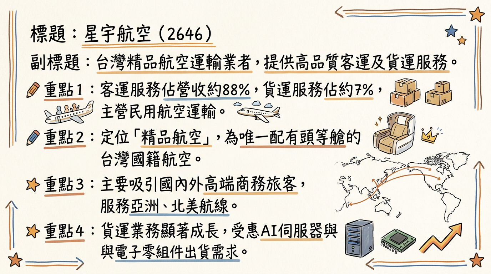
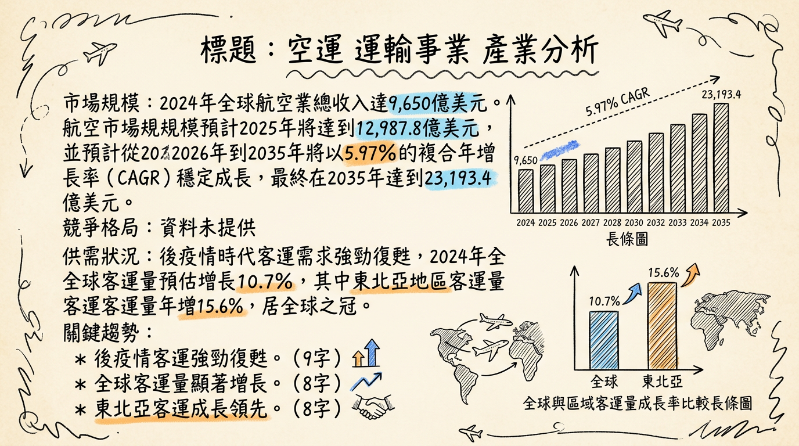
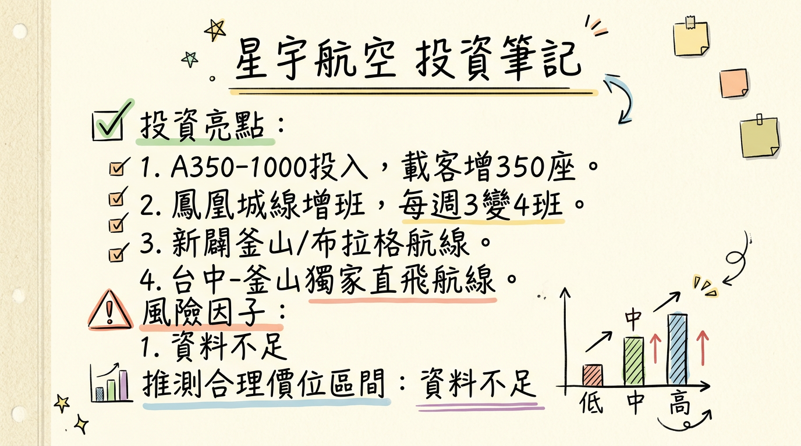

2646 星宇航空 深度研究報告
一句話摘要
星宇航空 (2646) 以其「精品航空」定位，積極擴張北美與歐洲長程航線，搭配年輕高效機隊及客貨運雙引擎策略，在後疫情時代展現強勁成長動能。儘管短期內因機隊擴張導致資本支出與折舊壓力影響獲利，但隨著航網日趨完整、轉機樞紐效益提升，加上 AI 伺服器帶動的高價值貨運需求，2026 年營運表現有望再創新高，並朝穩定獲利與發放股利目標邁進。
公司概覽
星宇航空（2646）是一家台灣的民用航空運輸業者，核心業務為提供高品質的客運及貨運服務。公司以「精品航空」的品牌形象區隔市場，是台灣國籍航空中唯一配有頭等艙的航空公司，旨在吸引國內外高端商務旅客與追求高品質體驗的觀光客群。
主要產品與服務：
- 客運服務： 提供亞洲、北美及未來歐洲航線的載客服務，強調精緻質感與差異化服務，如頭等艙。
- 貨運服務： 運輸高價值貨物，特別受惠於全球 AI 伺服器與電子零組件的出貨需求。
- 其他業務： 亦經營民用航空人員訓練業及酒類輸入業等。
營運樞紐：
主要營運樞紐為台灣桃園國際機場。2024年3月起進駐台中機場，成立台灣第二個主基地，深化中部市場布局。目前已拓展至 31 個城市、37 條航線。
營收結構（2026年1月）：
註：2025年12月數據顯示，客運營收佔比約 79.6%，貨運約 12.1%，客運仍為主要營收來源，貨運成長顯著。
核心競爭優勢
精品航空定位： 台灣國籍航空中唯一配有頭等艙，提供精緻質感與差異化服務，吸引高端商務與觀光客群，提高單位收益。
戰略性航網布局： 利用台灣優越地理位置，發展「北美－台北－東南亞」及「歐亞－北美」轉機樞紐戰略，強化全球航網覆蓋。
年輕高效機隊： 平均機齡僅 5 年，具備卓越燃油效率，燃油成本佔總營運成本約 25%，優於同業平均 30%-35%。持續引進新機擴大運能。
強勁貨運成長潛力： 受惠於 AI 伺服器、半導體等高價值電子零組件空運需求，貨運營收表現突出，未來全貨機機隊投入將進一步提升其市場地位。
積極市場開拓： 不斷開闢新航點，包含鳳凰城（台積電商機）、歐洲（布拉格）、韓國（釜山）、大洋洲等，並深化台中市場布局，快速擴展市場版圖。
財務分析
月營收趨勢
| 月份 | 金額 (億元新台幣) | 月增率 (MoM) | 年增率 (YoY) |
|---|
| 2026年1月 | 42.15 | 1.94% | -0.55% |
| 2025年12月 | 41.34 | 17.00% | 17.00% |
| 2025年11月 | 35.25 | -4.64% | 18.10% |
| 2025年10月 | 36.97 | 25.51% | 19.33% |
| 2025年9月 | 29.46 | -21.97% | 4.50% |
| 2025年8月 | 37.75 | -5.91% | 14.08% |
季度數據
| 季度 | 季營收 (億元新台幣) | 毛利率 | 營業利益率 | EPS (新台幣) |
|---|
| 2025年Q3 | 107.32 | 11.20% | -0.59% | -0.15 |
年度趨勢
* 全年營收：355.47 億元，年增 58%。
* EPS：0.53 元。
* 全年營收：440.53 億元，較 2024 年成長 24%，創歷史新高。
* 截至 2025年第三季累計 EPS 為 0.16 元。
* 管理層於 2025年12月法說會表示，為擴充產能，公司犧牲 2025年 EPS，從預估的 0.64 元降至 0.16 元，與前三季累計 EPS 吻合。
法說會重點
最近一次法說會日期： 2025年12月22日
管理層對各產品線的具體說明與 Guidance：
- 客運： 2025年第四季載客率已強勁回升至 78% 以上。2025年12月載客人數創歷史單月新高。2026年1月客運營收雖受假期落點影響，但隨著寒假及農曆春節旅遊需求遞延至 2月，預期客運營收將有進一步推升空間。
- 貨運： 2025年前三季貨運營收年增 69%，其中北美航線佔比高達 72%。受惠於電子零組件及 AI 等高價值產品出貨穩健，2026年1月貨運營收達 3.95 億元，年增率高達 35%。
- 機隊擴張： 公司處於資本支出極大化階段。預計 2025年底至 2026年間，機隊規模將由目前的 29 架擴充至 43 架，年增幅近 50%。2026年將交機 14 架新機，包括 3 架 A321neo、5 架 A330neo 及 6 架 A350-1000。首架 A350-1000 已於 2026年1月6日抵台，初期投入曼谷、東京等熱門航線。
- 資本支出影響： 14 架新機的加入直接推高攤銷及折舊成本，目前已佔營運成本的 17%。
- 航網佈局：
* 2026年1月15日開航台北－鳳凰城直飛航線，初期每週 3 班，預計 3月起增為每週 4 班。
* 2026年3月30日新增台中－峴港（每週 3 班）及台中－東京（每週 4 班），皆以 A321neo 客機執飛。
* 2026年2月13日起新增台中－宮古島（每週 2 班）。
* 2026年下半年規劃開闢台北至布拉格的首條歐洲航線，並規劃插旗另一個歐洲航點及進軍大洋洲。
* 與阿提哈德航空深化共掛班號，擴大全球航網覆蓋。
- 營運展望： 管理層看好 2026年客貨運維持穩健成長，預期營運表現將再創新高。2026年2月春節旺季的營收表現將是檢驗第一季營運成果的關鍵指標。
- 股利政策： 執行長暨總經理翟健華表示，2024年累積虧損已全部打平，2025年可以依照獲利概況發放股利。
券商觀點
目前公開資訊中未找到具體券商名稱及其明確的目標價或評等。法人對星宇航空 2025-2026 年 EPS 的預估如下：
| 評等日期 | 券商名稱/機構 | 2025年 EPS 預估 (新台幣) | 2026年 EPS 預估 (新台幣) | 評等 | 備註 |
|---|
| 2024年12月20日 | 法人預估 | 1.07 | - | - | 早期預估 |
| 2025年4月10日 | 法人機構平均 | 1.07 ~ 1.22 | - | - | 早期預估 |
| 2025年12月22日 | 管理層法說會 | 0.16 (累積前三季) | 將再創新高 | - | 因擴充產能犧牲，實際與累計前三季吻合 |
財報深度分析
利潤率趨勢
| 季度 | 毛利率 | 營業利益率 | 稅後淨利率 |
|---|
| 2025年Q3 | 11.20% | -0.59% | -4.18% |
| 2025年Q2 | 14.77% | 3.13% | 0.08% |
| 2025年Q1 | 21.60% | 10.60% | 8.17% |
| 2024年Q4 | 17.72% | 0.49% | -2.19% |
| 2024年Q3 | 21.57% | 9.86% | 6.62% |
| 2024年Q2 | 18.81% | 6.50% | 3.33% |
| 2024年Q1 | 23.12% | 10.44% | 7.79% |
- 2025年Q3 轉虧： 主要受新機陸續交付的前置成本、折舊攤銷費用增加，以及美國簽證政策收緊影響北美航線商務與探親需求。
- 燃油成本效益： 星宇航空機隊平均機齡僅 5 年，具備卓越燃油效率，燃油成本佔總營運成本約 25%，優於同業平均的 30%~35%。若國際油價維持穩定或下跌，將有利於利潤率改善。
- 航網擴張與載客率： 積極拓展北美及歐洲長程航線初期可能伴隨較高成本，但若能有效提升載客率與票價收益，將有助於長期利潤率改善。2025年12月客運載客率在旺季已達 80-90% 高檔。
- 永續航空燃油（SAF）成本： SAF 法規要求日趨嚴格，其價格是傳統燃油的 2 至 4 倍，未來可能逐步墊高環保合規成本。
存貨分析
目前公開資訊中未找到 2024-2026 年存貨金額、存貨週轉天數及異常堆積的具體數據。航空業的存貨主要為航材、備品，非傳統製造業模式。
資本支出
- 機隊擴張： 星宇航空正處於大規模資本支出階段，預計在 2025年底至 2026年間，機隊規模將由目前的 29 架擴充至 43 架，年增幅近 50%。2026年將交機 14 架新機，其中包含 6 架 A350-1000。
- 航線建設： 新開闢的長程航線（如鳳凰城、布拉格）需要大量前期投資與營運成本。
- 融資計畫： 公司已取得銀行團支持，每年會依新機交機情況進行各種籌資計畫，可綜合考量增資、發債等方式。
- 折舊攤銷趨勢： 新機隊的大量引入將顯著增加折舊攤銷費用，法說會指出目前已佔營運成本的 17%。
股權異動
- 申報轉讓/庫藏股/可轉債： 近期未找到 2024-2026 年董監事/大股東申報轉讓、庫藏股買回或發行可轉換公司債的最新公開紀錄。
- 增減資：
* 公司累計虧損曾達 81.5 億元，計劃利用資本公積 36 億元，加上上市發行 47 萬張股票募集的逾 47 億元，合計約 83 億元來彌補虧損，以改善資本結構。
- 股利政策： 財務長於 2025年12月法說會表示，星宇航空已於 2025年第二季彌補累計虧損打平，2025年獲利無虞，有望發放股利。若能順利打消虧損，最快 2026年可發放 2025年的股利。
產業分析
市場規模與趨勢
1. 全球航空市場規模
全球航空業在後疫情時代展現強勁復甦，並預計在 2025 年首次突破 1 兆美元的總收入大關。
* 2024 年預計總收入 9,650 億美元，年增 6.2%。
* 2025 年預計總收入首次突破 1 兆美元，達到 10,070 億美元，年增 4.4%。
* 預計從 2026 年到 2035 年將以 5.97% 的複合年增長率（CAGR）穩定增長，最終在 2035 年達到 23,193.4 億美元。
* 2024 年全球客運量預估增長 10.7%，東北亞客運量成長居全球之冠，年增 15.6%。
* 2025 年全球航空乘客量預計將達 52 億人次，年增 6.7%，首次突破 50 億人次大關。
* 2025 年客運收入預計將達到 7,050 億美元，佔總收入的約 70%。
* 2024 年全球航空貨物市場規模達 3,194 億美元。
* 2025 年全球航空貨物市場預計達 1,601.7 億美元，並預計在 2026 年達到 1,695.3 億美元。
* 國際航空運輸協會（IATA）預計 2025 年航空貨運收入將達到 1,570 億美元，貨物噸公里數（CTK）將增長 6%。
2. 供需狀況：供不應求
目前全球航空業呈現供不應求的狀況，主要因素包括：
- 強勁客運需求： 2024 年航空旅行需求強勁，2025 年亞太地區客運流量年增 5.8%，運能年增 4.9%，顯示需求略大於供給。
- 飛機供應鏈瓶頸： 製造商面臨供應鏈問題，導致新機交付延遲。截至 2024 年底，空中巴士和波音待交付訂單已達 17,000 架，創歷史新高，按目前速度需 14 年才能完成。
- 機隊老化與停飛： 全球機隊平均機齡已升至 14.8 年，約有 5,000 架飛機（佔機隊總數 14%）處於「停航」狀態，部分需進行發動機檢查，預計持續至 2025 年。
- 運力擴充受限： 飛機供應鏈問題短期內難以解決，有限運力將支撐票價。
3. 產業的平均毛利率水準
航空業是資本密集、成本高昂的產業，利潤率普遍較低。
- IATA 預估，2024 年全球航空業淨利為 315 億美元，淨利潤率為 3.3%。
- 預計 2025 年全球航空業淨利潤將達到 366 億美元，淨利潤率上升至 3.6%。
- 燃料成本是主要成本，2024 年約佔總成本的 30%，預計 2025 年因油價下滑可降至 26.4%。
競爭格局
1. 全球前 5 大公司及其市佔率
目前公開資料中未找到 2025-2026 年全球航空公司以營收或載客量計算的具體市佔率排名。以下為 Skytrax 2025 年全球最佳航空公司前五名（主要基於服務品質與旅客評價）：
| 排名 | 公司名稱 | 總部所在地 |
|---|
| 1 | 卡達航空 (Qatar Airways) | 卡達 |
| 2 | 新加坡航空 (Singapore Airlines) | 新加坡 |
| 3 | 國泰航空 (Cathay Pacific Airways) | 香港 |
| 4 | 阿聯酋航空 (Emirates) | 阿拉伯聯合大公國 |
| 5 | 全日空 (ANA All Nippon Airways) | 日本 |
| 特性 | 星宇航空 (2646) | 長榮航空 (2618) | 中華航空 (2610) |
|---|
| 技術 (機隊) | - 年輕機隊 (平均機齡 5 年) | - 2026 年預計有 2 架 B787-9 新機加入 | - 擁有國內最大規模貨機機隊 |
| - 高燃油效率 (燃油成本佔 25%) | - 機隊規模穩定 | - 舊機折舊多已攤提完畢 |
| - 主要為 Airbus 機隊 | - 以 Boeing 機隊為主 | - 搭配 2026 年開始陸續交付新機 |
| - 2026 年將交付 14 架新機 (含 A350-1000) | | |
| 產能 (航線) | - 積極擴展東南亞航線比重，強化轉機樞紐 | - 深化北美佈局，透過加密班次與新航點 | - 加開鳳凰城航線 (每週 3 班，1 月訂位 >7 成) |
| - 2024 Q3 已開闢 27 航點、29 條航線 | - 未來北美直飛航點將達 10 個，有望全年每週百班 | - 2026 年增班釜山、布拉格、紐約 |
| - 2026 年開航鳳凰城、布拉格等長程線 | | |
| 客戶與價格 (定位) | - 「精品航空」定位，提供頭等艙服務 | - 長期累積穩定商務客群，長程線與商務艙支撐收益 | - 廣泛客群基礎，肩負國家任務 |
| - 吸引高端商務旅客與觀光客群 | - Skytrax 2025 年全球最佳航空第 12 名 | - Skytrax 2025 年全球最佳航空第 37 名 |
| 公司名稱 | 2025 年全年營收 (億元新台幣) | 2024 年前三季毛利率* | 2025 年 EPS (新台幣) | 備註 |
|---|
| 長榮航空 (2618) | 2,203.33 | 未找到最新數據 | 27.74 (預估可達 31-33) | 歷史次高營收 |
| 中華航空 (2610) | 2,090.9 | 未找到最新數據 | 未找到最新數據 | 營收創新高 |
| 星宇航空 (2646) | 440.53 | 21.2% (2024年Q3) | 0.16 (累計前三季) | 營收年增 24% |
| 台灣虎航 (6757) | 168.99 | 未找到最新數據 | 未找到最新數據 (上半年 3.26 元) | 營收創新高 (廉價航空) |
產業趨勢
1. 關鍵技術趨勢與具體影響
*
影響： SAF 是航空業實現 2050 年碳中和的關鍵，預計提供 65% 的碳減量。2025 年 SAF 產量預計倍增至 200 萬噸，但僅佔總需求的 0.7%。電動飛機（如 eVTOL）預計 2025 年臨近商業認證，可降低運營成本與碳足跡。
*
影響： AI 將優化空中交通管理，實時規劃飛行路徑、預測擁堵、實現日常任務自動化，提高空域利用率、減少延誤。在維護方面，AI 驅動的預測性維護能識別潛在故障，減少延誤、提高機隊利用率。AI 也應用於收益管理和數位化轉型。
*
影響： 機場正透過數位化提升乘客體驗、優化地面營運效率。機上互聯服務將成為標配，並為航空公司創造新收入。區塊鏈、大數據、物聯網等技術應用於航空貨運等流程，提高效率和透明度。
2. 對星宇航空的具體機會和威脅
*
高端市場定位： 吸引高價位客戶，提高收益。
* 台灣樞紐地位： 台灣位於「北美—東南亞」黃金航線樞紐，受惠於供應鏈重組及高端商務客流。桃園機場第三航廈啟用將進一步提升轉機效益。
* 貨運需求增長： AI 伺服器與電子零組件高價值貨物需求推動貨運成長，未來全貨機機隊潛力大。
* 新機隊優勢： 年輕且燃油效率高的機隊有助於降低成本、提升競爭力。
*
供應鏈挑戰： 飛機製造商供應鏈瓶頸導致新機交付延遲、維護成本增加，預計持續到 2030 年。
* 高營運成本與薄利潤率： 航空業資本密集，星宇「精品航空」定位帶來高成本，若載客率或貨運收益不足，可能面臨虧損壓力。
* 競爭激烈： 台灣市場有華航、長榮兩大巨頭，星宇需持續投入資源維持差異化。
* 地緣政治與經濟不穩定： 可能影響燃油價格、貨運需求和國際旅行意願。
3. 相關投資題材的具體連結
*
具體連結： AI 產業爆發性增長是推動台灣航空貨運市場的主力。高單價、時效性高的 AI 伺服器與零組件高度依賴空運。
* 對星宇航空影響： 即使目前僅客機腹艙載貨，2025年12月貨運營收仍年增 37%。隨著 AI 產業發展，星宇航空在貨運方面的成長潛力巨大。鳳凰城航線也直接服務台積電（AI晶片主要供應商）的商務需求。
近期催化劑
利多事件清單
- 2026年1月6日： 首架 A350-1000 廣體客機抵台，將投入長程航線。
- 2026年1月15日： 正式開航台北－鳳凰城直飛航線，初期每週 3 班，預計 3月起增為每週 4 班，搶進台積電商機。
- 2026年1月營收： 總營收 42.15 億元，貨運營收 3.95 億元，年增率高達 35%，受惠於電子零組件與 AI 伺服器相關產品出貨穩定。
- 2026年2月10日： 首架 A350-1000 正式投入營運，執飛台北－東京航線。
- 2026年2月12日/13日： 恢復台北－宮古島航線，並新增台中－宮古島航線，擴展區域航網。
- 22026年2月25日： 宣布自 2026年6月1日開闢全新「台北／台中－釜山」航線，首次進入韓國市場，並成為全台唯一提供台中直飛釜山的航空公司。
- 2026年2月25日： 台北－布拉格航線正式開賣，歐洲航線布局啟動。
- 2026年3月： 台中出發航線陸續開航宮古島、東京、熊本，預計使台中出發航線增加至 9 條。
- 22026年3月30日： 新增台中－峴港（每週 3 班）及台中－東京（每週 4 班），深化中部市場布局。
- 2025年12月22日法說會： 管理層表示 2024年累積虧損已全部打平，2025年有望發放股利；看好 2026年客貨運維持穩健成長，預期營運表現將再創新高。
- 2025年全年營收： 達新台幣 440.53 億元，較前一年成長 24%，創歷史新高。
- 外資回補： 2026年2月11日外資在 1 月營收公布前後出現回補動作。
利空事件清單
- 2026年1月營收年增率負值： 2026年1月總營收年減 0.55%，主要受去年農曆春節基期較高影響，但仍需觀察後續表現。
- 外資近期賣超： 截至 2026年3月5日，外資近 20 日買賣超為 -1,900 張，2026年第 1 季累計買賣超為 -11,865 張，顯示近期外資有部分賣壓。
⭐ 成長動能時間軸
*
2024年3月： 進駐台中機場，成立第二個主基地，深化中部市場布局。
* 2026年上半年： 2、3月陸續開航台中出發的宮古島、東京、熊本航線，使台中航線增加至 9 條。6月1日開闢台北/台中-釜山航線。
* 2027年： 桃園機場第三航廈預計上線，將對星宇航空帶來極大助益，北美和東南亞航線將集中在第三航廈，提升轉機效率與客戶體驗。
*
2026年1月15日： 開航台北－鳳凰城直飛航線，搶進台積電美國廠的商務需求，具有極高戰略指標意義。
* 2026年2月25日： 開賣台北－布拉格航線，預計下半年開闢，首次插旗歐洲市場。
* 2026年6月1日： 開闢全新「台北／台中－釜山」航線，正式進軍韓國市場。
* 2026年底至2027年初： 規劃進軍紐澳等大洋洲市場。
* 長期： 北美轉機客佔總載客約 6 成，受惠於台灣作為「北美—東南亞」黃金航線中轉站的供應鏈重組。
*
2026年： 將迎來民航業罕見的交機高峰，新增 14 架各式飛機，屆時總機隊規模將達到 43 架 (增幅近 50%)。
* 2026年： 將再迎來 5 架 A350-1000 客機，加上已抵台的首架，總計交付 6 架 A350-1000，成為推展北美及歐洲長程市場的主力機種。
* 2026年： 貨運運力預計新增 3 成，客運運力預計新增 25％。
* 2027年： 第一階段 48 架客機預計全數交完。
* 2029年： 10 架貨機預計交付完成。
* 2033年： 長期目標機隊規模達 68 架。
*
客運市場： 全球航空客運市場已擺脫疫情陰霾，2026年全球客運需求預計成長 4.9%，其中亞太地區貢獻近 50% 的增長份額。IATA 預估 2026年總旅客人數將達 52 億人次，載客率 83.8%，創歷史新高。
* 貨運市場： 受惠於 AI、半導體、高科技電子等高價值貨物需求。台灣位居全球 AI 供應鏈關鍵地位，預計 2026年全球八大 CSP 資本支出將突破 6,000 億美元大關，推升貨運市場穩健成長。
2026 展望
成長動能
機隊規模與航網擴張紅利： 2026 年是星宇航空交機高峰期，新增 14 架飛機使機隊規模達 43 架，運力大幅提升。鳳凰城、布拉格、釜山等新航線陸續開闢，將顯著擴大市場覆蓋率與轉機效益。
客運需求強勁復甦： 全球旅運需求持續看漲，特別是亞太地區成長最快。星宇航空在高端客群的定位，有助於在激烈競爭中維持高載客率與單位收益。
航空貨運高價值需求： AI 伺服器、半導體及電子零組件等高價值產品的強勁出口需求，將持續推升航空貨運市場。星宇航空憑藉北美航線的高佔比，有望持續受惠。
轉機樞紐戰略成效顯現： 台灣作為「北美－東南亞」黃金航線中轉站的戰略地位，加上桃園機場第三航廈的啟用規劃，將為星宇航空帶來更多轉機客源，提升載客率和收益。
風險因子
財務槓桿與股權稀釋風險： 截至 2025 年負債權益比高達約 159%，高利率環境下利息支出壓力大。未來為購置新機與償債，可能需增資導致股權稀釋。
供應鏈挑戰與成本壓力： 全球民航製造供應鏈緊繃，可能導致新機交機延遲，進而影響運力規劃及營運效益。飛機及零組件成本、維護成本可能居高不下。
地緣政治與總經不確定性： 地緣政治衝突、國際經貿政策變動、匯率波動及燃油價格不確定性，均可能影響營運成本、貨運需求和國際旅行意願，對獲利能力構成潛在威脅。
市場競爭加劇： 台灣航空市場仍有長榮、華航兩大強勁競爭對手，星宇航空需持續投入資源以維持其差異化與服務品質優勢。
過度依賴單一市場風險： 過去曾因過度依賴日本航線而受國際政策影響，儘管正積極擴展，但航網平衡性仍需時間驗證。
投資結論
星宇航空正處於高速成長的轉折點，其「精品航空」定位、積極的航網擴張、高效年輕機隊以及 AI 驅動的貨運成長潛力，構築了其獨特的競爭優勢和長期成長曲線。儘管短期內受巨額資本支出與折舊攤銷影響獲利能力，但這些投資是為未來高速成長鋪路。管理層對 2026 年營運表現創新高的信心，以及彌補虧損並有望發放股利的目標，顯示公司對未來展望樂觀。
綜合考量其成長動能與潛在風險，給予星宇航空以下 3-5 點投資結論及目標價區間建議：
高成長期投資： 星宇航空目前處於機隊、航網快速擴張的高成長期，雖短期獲利受壓，但市場份額與航網效益正迅速建立。長期投資者應關注其營收成長與轉機樞紐戰略的實踐。
客貨運雙引擎驅動： 受惠於全球觀光復甦帶來的客運需求，以及 AI 伺服器等高科技產品空運需求，星宇航空的客貨運業務將持續增長，尤其貨運有望提供穩定的高毛利貢獻。
「精品航空」差異化優勢： 其高端品牌定位有助於在競爭激烈的航空市場中區隔化，吸引高價值客戶，維持較高的平均票價收益。
財務結構改善與股利展望： 隨著累計虧損的彌補，以及管理層對 2025 年底有望發放股利的承諾，將有助於提振市場信心，並吸引更多價值型投資人關注。
風險管理： 需密切關注燃油價格波動、全球供應鏈對交機時程的影響，以及地緣政治風險對國際旅運與貨運市場的衝擊。公司對負債槓桿與股權稀釋的應對策略也至關重要。
投資建議： 鑑於 2026 年營運預期將再創新高，若 EPS 能恢復並超越 2024 年的 0.53 元，預估可達
0.8-1.2 元。考量其成長性與精品航空定位，給予
20-25 倍的本益比區間。
目標價區間建議：新台幣 16 元 至 30 元。
本報告由 AI 自動產生，資料來源為公開網路資訊，僅供參考，不構成投資建議。產生時間：2026-03-06 12:57
📊 資訊卡


